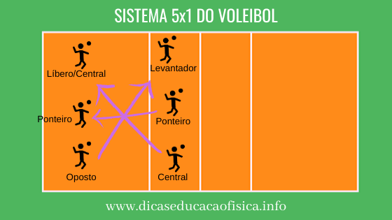

O que é?
No voleibol, a rotação (ou rodízio) é a movimentação obrigatória dos jogadores a cada vez que a equipe
recupera o direito de sacar. O movimento é feito no sentido horário. Se a regra não for respeitada
no momento do saque,a equipe comete uma "falta de rotação" e perde o ponto.
Como é realizada
A quadra é dividida em 6 posições, numeradas da seguinte forma (olhando para a rede):
Posições de Rede (Ataque): Posição 4 (esquerda), Posição 3 (centro), Posição 2 (direita).
Posições de Fundo (Defesa): Posição 5 (esquerda), Posição 6 (centro), Posição 1 (direita).
O Movimento:Toda vez que o time que recebeu o saque faz o ponto, ele ganhao direito de sacar
e todos os jogadores devem se mover uma posição para a direita.
O jogador da Posição 2 vai para a Posição 1 e realiza o saque.
O da 1 vai para a 6. O da 6 vai para a 5. O da 5 vai para a 4. O da 4 vai para a 3. O da 3 vai para a 2.
O time que já estava sacando e pontuou não roda; os jogadores apenas continuam na mesma formação

Posição x Funções
As posições numéricas são apenas para o momento em que o árbitro autoriza o saque. Após a bola ser colocada em
jogo,
os jogadores correm para as suas funções táticas reais em quadra (como levantador, central ou líbero).
Falta de rede: O jogador do fundo não pode subir para bloquear ou atacar pisando na zona de ataque.
Falta de alinhamento: Durante o saque, os jogadores das linhas (rede e fundo) não podem inverter seus lados,
e o jogador do fundo não pode ficar mais próximo à rede do que seu companheiro da rede correspondente.
Posições específicas no 5x1
Levantador: É a posição que fica oposta ao oposto e é responsável pelo segundo toque da equipe.
Oposto: É a posição que fica oposta ao levantador e é responsável por atacar na saída de rede.
Ponteiro: É a posição que fica oposta ao ponteiro e é responsável por atacar na entrada de rede.
Central: É a posição que fica oposta ao Central ou ao Libero responsável por ataques rápidos no meio da rede.
Líbero: É a posição qur fica oposta ao Central, ela é uma posição exclusiva de defesa, então não pode sacar e
nem atacar,
sua principal função é receber os saques e ataque da equipe adversária
